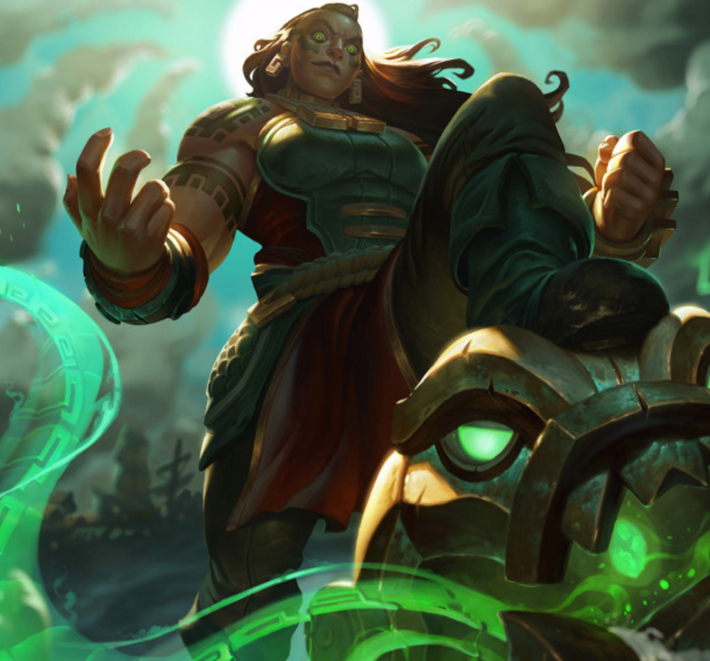

Illaoi, the Kraken Priestess is a new exciting champion to the game of League of Legends. Though she has only recently been added to the Summoners Rift, Illaoi has shown great potential as a top lane juggernaut.
The Champion Spotlight to the right helps highlight and summarize Illaoi's unique kit. Click the play button to find out more!